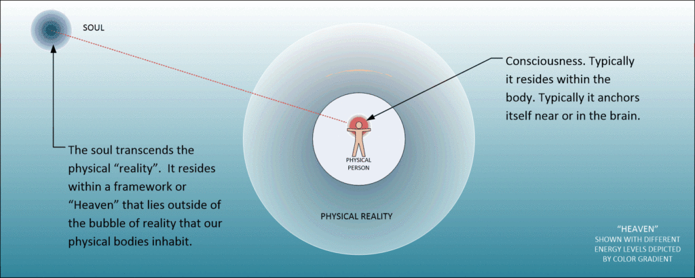
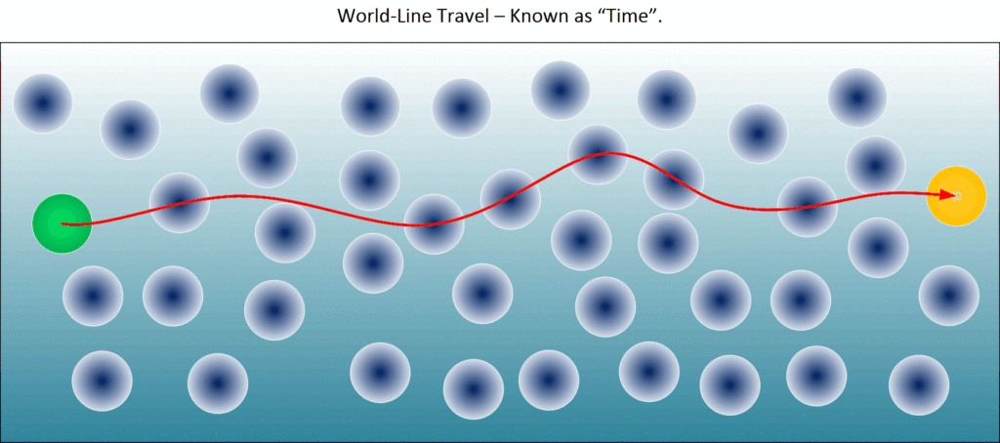
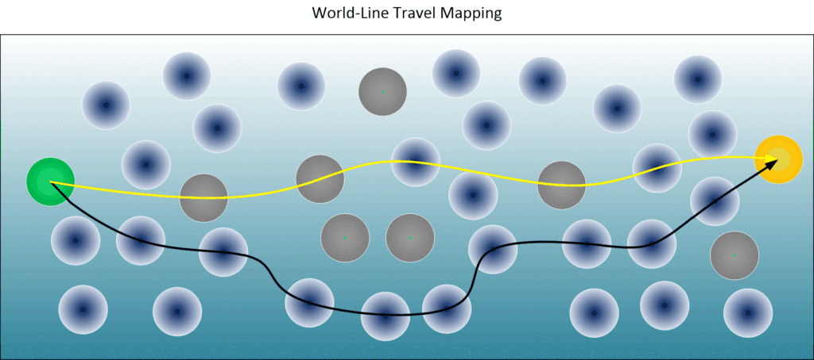
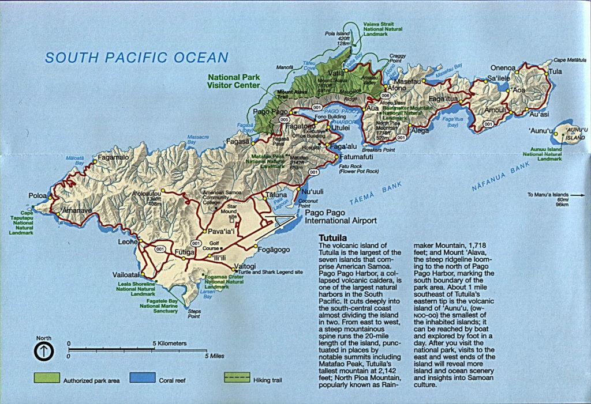
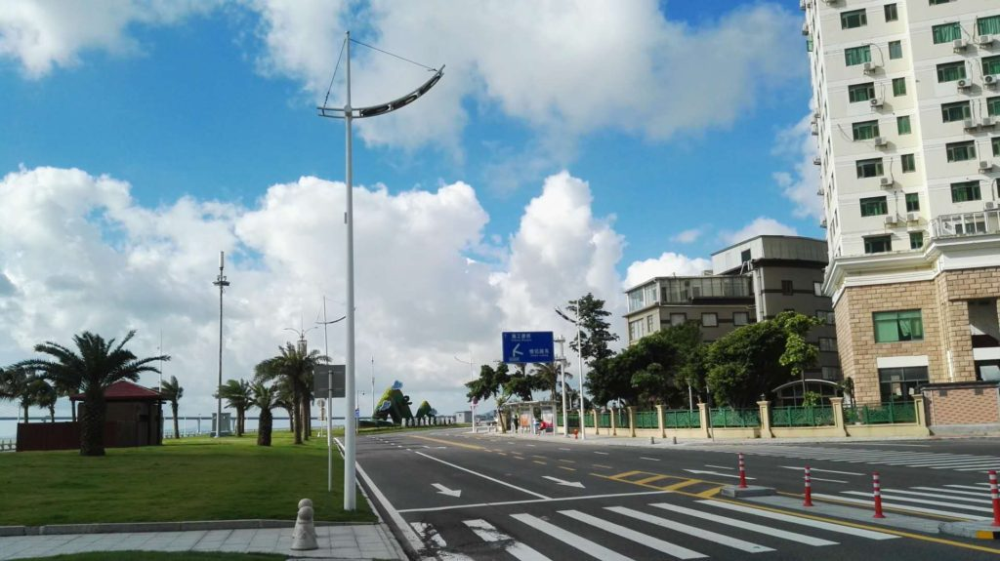

Not the world’s best title. I know.
Here we discuss how our consciousness can alter the reality that surrounds us. So that if we want to live a “much improved” life, in whatever way we choose, we can manifest it. We do this, of course by world-line navigation. This, of course, is controlled by thought; our own personal thoughts.
The United States government can spend millions of dollars to take you from Chicago to Los Angles in a brand-new high-technology MACH 4 aircraft. Or, alternatively, you can walk instead. This post describes using a number of techniques that anyone can use to manifest their "ideal" reality. Think of it as the opposite of going into a dimensional-transport portal. You go in from one reality, and you leave it in a completely different reality. Here, the only difference is that this technique (so described) is much slower than any government device.
Introduction
This post started innocently enough by an influencer who asked (in part)…
I was wondering if your “special skills” include a sense of what kinds of businesses might be hot in the next few years or what kind of products and market niches would be successful. I ask this because in the next few years I could early-retire and I always wanted a small manufacturing business or job-shop, getting back-to-my-roots kind of thing.
Which is a great question. Right?
I mean to say, if I have this ability (that I say I have), why can’t I use it to create a life for myself that is exceptional?
(Um… Who says that I haven’t?)
In The Matrix, Cypher and multiple other crew members of his ship, were awakened from an induced state of sleep to find out that the world that they were living in was a lie, and that the real world was a much more unpleasant and dangerous place. He longs for the time when he didn’t know the truth. Sometimes the truth is infinitely more painful, than living in a fantasy. Ignorance is bliss. -Answers from Men
OK. Here’s the good and the bad news regarding this.
Firstly, the GOOD.
Yes. By understanding the way the universe works, the nature of consciousness, and the role thought has, you CAN pick and choose world-line destinations. If you wanted to be a Hollywood Director, like Cypher wanted in the movie “The Matrix”, you can actually create that reality.
Sounds pretty cool huh?
So I am going to say it yet again. Yes, you can navigate your consciousness to the most crazy and elaborate world-line situations that you can think of. And yes, you can inhabit those realities exactly as you desire.
Others are doing so.
If you were to go back to 1986, and announce to the world that…
- Bruce Jenner would become a girl.
- Donald Trump would be President.
- O.J. Simpson would go to prison.
- Payphones would disappear.
- All music would be free.
- Plastic straws would be considered dangerous.
Everyone would think that you were crazy.
Take note. The strangest changes to your reality can actually. manifest. You can carve out the reality that you desire. You can specify it exactly and it can manifest exactly as you specify.
So, any of these unusual things can actually manifest in your new world-line reality;
- You meet the girl of your dreams.
- You become fantastically wealthy.
- You become famous, important and admired.
- You live in the house of your dreams, and drive a Ferrari.
- Weather, climate, luck, and fortune smiles upon you.
You just need to manifest your desires… carefully.
It is like the British comedy titled “Absolutely Anything”. Where the main character can ask or wish for something and it manifests.
The only thing is, that it takes time to traverse the world-lines to manifest. Most people navigate the MWI at around 4Hz. They more outrageous the desire of intention, the more world-lines that your consciousness needs to pass through. Thus, the more time it will take to manifest.
But, of course, it will eventually manifest.
Now for the BAD
Navigation of World-line travel is not for the faint of heart.
We naturally, as a living being on this planet, conduct world-line travel. Every moment, of every day, roughly 244 times a minute we move in and out of new realities.
Most humans operate at around 4 Hz. That is the speed at which we process a given reality. This speed changes under all sorts of conditions.
We view this progression; this movement from one reality to another as an “arrow of time”.
The problem is that we don’t view it as anything but “the way the universe is”. We wrongly and incorrectly view it as beyond our control. We think that time is fixed and immutable. As such we use it, as a clock, for all purposes related to physics and dynamics.
So, everyone naturally conducts world-line travel.
However, they do so without navigation. They do so without planning, a map or any sort of objective. They just wonder about, and let the surrounding reality affect their thoughts. They let their thoughts be their own thoughts, totally and completely oblivious to the fact that the thoughts are HOW you navigate to new realities.
But, take special note, everything outside our consciousness is not fixed. Is is all subject to change. The ONLY thing that is fixed is our consciousness.

Now, here is the kicker.
To obtain the reality that we want to inhabit (whatever that might be). We need to map out a plan to get there. We need to navigate our consciousness in and out of adjacent realities so that eventually we will arrive at our ultimate destination(s).
Fundamentals
Thus, to be able to do this, we need to control two (2x) things…
- A map, plan, or schedule of where we want to go.
- Mastery of our thoughts.
[1] Planning – A Map
The first thing we need to talk about and address is planning.
The influencer, who started this entire dialog, simply wanted some guidance on local market forces in the near future. In the Matrix, Cypher simply wanted to be reinserted in a completely new reality. Yet, both of these changes can be manifested using the same techniques.
Let’s talk about this.
I don't want to remember nothing. Nothing. You understand? [pause] And I want to be rich. You know, someone important, like an actor.
We will use the Cypher character from the movie “The Matrix” to illustrate. In the movie, he had a general idea of what he wanted. He had a target that they wanted. He wanted to be rich, and successful. He wanted to be respected, have a lot of fun, and not need to worry about too much. He wanted the life of a Hollywood director. He wanted the wealth, prestige, and the casting couch. That was his goal.
But… how to arrive there?
In the movie, he had a steak dinner with an agent of the reality. (A Mr. Smith.) He negotiated with them. He promised to take some action, and in reward, we would be given a new life within a new reality.
In the movie, it is very simple. You promise “A”, and in exchange you will get “B”.
In the movie, Cypher promised to capture (or kill, I’m not sure which it was) the main character Neo. In exchange, the “angel of change”, a Mr. Smith would give him a new reality where he would have a new life as a Movie Director.
Cypher knew he could do this because he knew what the Matrix really was. He knew that everything was an illusion. Yet, his consciousness and his body treated that illusion as a reality. He wanted to taste the steak and chew it in his mouth. He wanted to drink the wine and smoke the fine cigar. He wanted to use that knowledge to garner a far better life for himself.
The first thing that you need to do is plan.
You need to have a “map” that describes exactly what you want in your life. This can be a lot of fun, but I must urge caution. Manifesting thoughts can also manifest all sorts of unintended consequences. It has been my experience that what is pictured in Hollywood is often nothing that represents real life. No matter how good they try to provide that image, it’s just not the way things work.
Unless you are careful, the reality that you manifest can bring with it all sorts of other issues and problems.
Thus you do need to be very careful in the specifying of your ultimate world-line destinations.
“Sometimes when you win, you really lose. Sometimes when you lose, you really win. Sometimes when you win, you really tie. And, sometimes when you tie, you really win or lose.” White Men Can’t Jump – Rosie Perez (Gloria Clemente) Gloria was trying to get her boyfriend to see that every action that you take affects someone or something else. Some results are obvious and intended, but occasionally they have negative, unintended affects too. Her boyfriend had lost substantial amounts of money playing basketball, despite being great at it. He finally came through on his promise to win money in the game, but found her gone when he came home. He won the game, but lost his girl. You can yell at your boss in staff meetings, sleep with his wife on his desk, and pee on the carpet in his office, but you probably will not keep your job. So, unless you are waiting on a hefty inheritance, you should thoroughly think through the repercussions of your behavior before you do anything. Sometimes, your first instinct is not the best one. -Answers from Men
I have found that it is far easier for me to describe things using diagrams. Here, in this first diagram, we see how a normal person (just living life normally) experiences time.

Now, that you know what “time” is, you can now understand that the “passage of time” is you passing in and out… through… all sorts of adjacent world-line realities.
The Matrix is a system, Neo. That system is our enemy. But when you're inside, you look around, what do you see? Businessmen, teachers, lawyers, carpenters. The very minds of the people we are trying to save. But until we do, these people are still a part of that system and that makes them our enemy. You have to understand, most of these people are not ready to be unplugged. And many of them are so inured, so hopelessly dependent on the system, that they will fight to protect it. — Morpheus (Laurence Fishburne), The Matrix
Now, let’s talk about how to map out the passage of time to get you to a destination; a reality that you would prefer.
For instance, look at the following diagram.
- You are currently in world-line reality “A”. It is shown in a green color.
- You want to eventually have a new reality “B”. It is shown in a gold color.
- There are two paths marked out. One is yellow and one is black.

The yellow path is the most direct path. It will require fewer adjacent realities to pass through. The black path is the preferred path. It will take longer, because you will need to pass through more adjacent realities to get to it.
The reason that you want to take the black path over the yellow path is so that you can avoid those problematic realities. They are shown in grey. These are realities that will cause you turmoil and distress that you do need to avoid if you truly want to have a great life. They include such things as car accidents, company layoffs, periods of hardship, medical bills, and death. You do want to avoid these realities.
You MUST plan. You MUST visualize what you want. If you do not, then you will not have any ideas or visualization of your desires, and the desires of others around you will determine what will happen to you. Don’t allow that to happen.
Thus, when planning, you need to absolutely make sure of a number of factors. These are;
- A destination lifestyle. Clear and easy to visualize. It must be very detailed. There must be no ambiguity in it what so ever.
- Incorporate elements that will guarantee avoidance of problematic adjacent realities.
Important note. No this is not walking into a dimensional-portal and going in and out different world-lines. Instead, this is using the knowledge that every fraction of a second 1/244 minute we move to a new reality as determined by our thoughts and the thoughts of those around us. This discusses how we "steer" our consciousness in and out of those realities to achieve our goals.
[2] Mastery of our thoughts.
“You have to let it all go, Neo. Fear, doubt, and disbelief. Free your mind.” The Matrix – Lawrence Fishburne (Morpheus) The only thing that can stop you from accomplishing everything that you have dreamed of, is you. Once you believe that something is possible, it becomes possible. Fear stunts our ability to succeed in our professional and personal lives. -Answers from Men
Thoughts alter our reality.
They do, and this isn’t just some kind of “new age” mumbo-jumbo. It is a fact, and if you can’t get your arms around this basic point, you need to go back to school and study Quantum Mechanics all over again.
- The strange link between the human mind and quantum physics.
- Quantum experiment in space confirms that reality is what you make it
- 5 Mind-Blowing Quantum Experiments
- Quantum Physics Explains How Your Thoughts Create Reality
- 8 Studies that Show How Consciousness Affects Reality
- Quantum Theory Demonstrated: Observation Affects Reality
- Part 1: Using Quantum Physics to…Manipulate Reality
- Thoughts Create Reality Dr. Emoto’s Scientific Experiments
- More Than One Reality Exists (in Quantum Physics)
- “Consciousness Creates Reality” – Physicists Admit
The primary key is navigating the map that we created in [part 1] above, this navigation is often difficult to do. That is because we need to be in control of our thoughts, and modern life will not permit that.
All that “fake news”, and every commercial you see, and all the thoughts by all the people around you affect YOUR thoughts.
If you want to become the master of your life, and obtain the end destination reality that you mapped out, you will need to turn off those bad thought-streams. Yes, and that means breaking some long-formed habits.
That daily dose of news first thing in the morning MUST END.
As I read the news I see a specter of a dark foe bent on creating a world that few of us want to see, one built out of fear and control. It’s even scarier because that foe wants you and I to think that it’s winning, so we will give up and it can win by default. Don’t. -Wilder Wealthy Wise
You must start to control the thoughts that go into the environment around you. If you cannot master that, you will never obtain the end goals that you have set for yourself.

What you, the reader need to understand is that all that “stuff” outside of you is just “wall paper”. It just doesn’t really affect you. Not physically. It just affects your thoughts.
I used to watch cartoons as a boy, and one of my favorites was the Flintstones. When the cartoon characters would be riding in a car, the background would cycle the same pictures over and over and over again. It gave the illusion of movement, however there wasn't any real scenery. That is what American news is actually like.
One of the most important things that I have learned is that all that other “stuff” that seems all important to us; the changes in the world, work, money, politics, etc. Has no real bearing on your reality. It is just scenery outside the window on a speeding train that you are riding in.
Every moment, every fraction of a second, your consciousness leaves one reality and enters a new one. The formation of that new reality is created by your thoughts. By using intention and directed prayer, you can navigate your consciousness along a path that will take you where you want to go. The problem here, and it is a really big problem, is to tune out the adverse thoughts that keep knocking you off the path that you mapped out.
You need to control your thoughts.
I’m a long time reader of Scott Adams dating back into the mid-1990’s. He’s most famous for Dilbert, but he has written books and blogged for decades about everything from management to life skills to persuasion. Daily, Scott Adams writes his goals 15 times (LINK). Why 15? I don’t know. But Adams has reported that it produces amazing results for him, and he’s lived a pretty amazing life. It might also have something to do with him being a genius who works really hard and tries lots of things. Nah. He must be a beneficiary of the structural capitalist patriarchy and the reason people love Dilbert is only due to white privilege. That explains everything, if you’re in Congress. How the goal writing produces results is probably unimportant – in my opinion the most likely idea is that if you’re focused on a goal, you’ll notice connections, clues or opportunities that would normally pass you by. The focus on the goal, the attitude that you can achieve something great changes the way you look at every aspect of your day. I know that when I believe I can succeed, I seem to keep finding ways to actually make it happen. -Wilder Wealthy and Wise
- Focus on your goal; living it. Breathing it. Existing in it.
- Turn off all outside thoughts as best you can.
- You can read news, but if you start to get angry or affected, then you need to leave.
- Remove yourself from negative people. They have an illness. Their illness will absolutely affect your ability to manifest your reality.
If you are married to a mentally ill person, that person will take over your life. You must get out from that horrible situation. Their thoughts are terribly discordant. It WILL alter and affect your life. Unless you are careful, you will start to live the life that their thoughts manifest, not what yours do. Be careful.
Control of thought – Intention
The most important skill that you need to learn in world-line navigation and destination arrival is to control your thoughts.
“This is your life, and it’s ending one minute at a time.” Fight Club – Edward Norton (nameless narrator) Life is short. Wasting your time in a fruitless job, talking to people that you abhor, and waiting for some miracle to happen is foolish. -Answers from Men
This is a form of prayer.
Prayer, directed thoughts, and full-on intention are all focused and directed thoughts. This is very important. This is the tool that will allow your future to manifest.
Now, I am not going to delve in the many, many ways that a person can pray and visualize intention. I will instead list the ways that (I know) work. It’s up to you, the reader to implement or not.
- A visualization creation. This could be a cork-board on the wall with pictures of the life that you want to live. This is often referred to a “visualization board”. You can also do this on your desktop wallpaper. Just cycle in and though pictures that depict elements of the life that you want. “My desktop wallpaper aptly describes and visualizes the type of lifestyle that I am manifesting.”
- Create a listing of what you want. This can be a page in a note book, or some simple phrases on a piece of paper magnet-attached to your refrigerator. You will need to repeat these phrases out loud. “Words are culled with power.” (Les Moore quote.)
- Time to pray / visualize. Everyday, without fail, you repeat verbally OUT LOUD what you want in your life. This can take a few minutes to much longer. But you MUST do it every day. You can do it in the shower, mowing the lawn, riding in the car to work, or you can do it while you are riding a bicycle, or while you are exercising. But, you must do it. This is a fundamental core requirement to direct your thoughts. This is NOT a passive activity. You must emotionally attach yourself to your goal reality.
- Make a point to alert against bad realities. This is a little trick that I learned was absolutely necessary. Or else you will start experience hardships like layoffs, difficult times, illnesses and accidents on the road to your mapped out reality. “I am the captain of my consciousness and navigate to my ultimate goal by avoiding trouble, hardship, and distress.”
- Take note that the resulting reality will not be exact. It will be a very close approximation of what you want, but no… you cannot specify exact people and exact locations, and very constructive levels of detail. Nor do you actually want that. If you focus on your baseline wants and desires, the rest will fill in automatically. Keep in mind that Hollywood is not reality.
That is step one of a two-step visualization, with intention prayer exercise.
The second step is duration and longevity. You must do this for a period of time. I would argue that it should be for at least a month, every day. I would also put an upper limit of no more than six months, with about three months being the norm.
The second step is release.
A Quick Word…
You can go on-line and do a picture search for “vision boards”. Many look really nice, but they are completely wrong. A proper “vision board” would consist of images, NOT words. Maybe music that is inspiring to YOU. Or video snippets that have some meaning for you.
Don’t do this…
What ever you do, create something that is meaningful to you. You image it, and you think about it. It will manifest. Maybe a little like this. I utilize positive and fun micro-videos to help me keep the visualization of my life first and foremost…
Hey! You want to have fun? Play with the girls and eat and drink well. Maybe something like this would be appropriate…
Or Hey! Maybe you want to have a wife or a girl friend. You need to imagine clearly what they would be like. You need to concentrate on their personality and how they MAKE YOU FEEL. You need to burn those thoughts and those feelings inside of you and attract those traits to you.
Maybe something like this…
Or, maybe you want to get fit. Maybe you want to lose some weight. Maybe you want to be healthier. Instead of putting the words “be healthy” on a visualization board, maybe you can watch this video a couple of times every day. Visualize with thought and emotion…
Release
Once you have done these intention exercises for a few months, then stop. Give it up. The thoughts have been set in motion, and the reality that you want to manifest is out there. Somewhere.
Have some faith. It will all manifest.
In my experience, most things have manifested within a two year period. The longevity and “seriousness” of the manifested reality is directly tied to the emotional attachment of the intention, as well as the duration.
The amount of time that must be endured until you obtain your new reality is a function of the number of adjacent realities that you need to pass through in your achievement map / plan. This in turn is also a function of how different your ultimate reality is from your current reality.
The variables that will influence the timing of reality manifestation;
- How different and “far out” your goal is from your current reality.
- The thoughts and habits that you currently have.
- The thoughts of those around you, especially those of family members.
- The discipline that you have in doing all of this to make your new world-line realized.
Alertness to awareness.
It has been my experience that your ultimate reality goals will eventually manifest in one way or the other. You will not be aware what they are until long after you are within that reality. It is only when you are reminded by an old vision board, or an intention list, or some other item, that you will be stunned at just how your reality did manifest.
What is a Vision Board? A vision board is a tool used to help clarify, concentrate and maintain focus on a specific life goal. Literally, a vision board is any sort of board on which you display images that represent whatever you want to be, do or have in your life . -What is a Vision Board?
Why avoid the news
Once you start using personal intention to navigate the MWI, you start to realize that all the news is not for you. It is like wallpaper, or window-dressing. It really doesn’t affect your life in any way aside from scaring you and cause you to cower in fear.
As I read the news I see a specter of a dark foe bent on creating a world that few of us want to see, one built out of fear and control. It’s even scarier because that foe wants you and I to think that it’s winning, so we will give up and it can win by default. Don’t. -Wilder Wealthy Wise
For instance, I am in China, and Donald Trump has just raised American tariffs to Chinese sourced products 25%. This normally would scare the living daylights out of me, because the industry that I am a part of relies on international trade.
However, I know that the reality that I have manifested and are maintaining for myself is one of personal prosperity and happiness. So, it will absolutely manifest. You don’t need to worry.
- What is good for me personally might not be good for others.
- What the news reports is for other people to read. Not me.
Now, let me explain.
You know, any money I get is in USD and used in China under the Chinese yuan (RMB). Thus, these terrible tariffs has resulted in a drastic change in the conversion rate USD to CNY. So now, today, I make around 15% more money compared to last month.
Thank you Donald Trump.
The point is this. All outside news is poison.
Tune it out as much as you can and focus on your life. Appreciate it more. Pray and provide directed intention always. Do not let up.
Examples
A little history lesson.
I first learned the necessity of using focused intention early on in MAJestic. The world around me was always jumping around and changing, and the only way that I could get any kind of handle on my life was to be able to focus my thoughts.
The life I had before entering MAJestic was never going to work. Not being entangled with the EBP like I was. I could never go back to living life I like used to. I had to adapt. I had to change. I had to take on coping skills that I could incorporate into my new reality.
The ELF probes were a MAJestic creation, and did not effect the MWI as much as the EBP did.
In those early days, I started to use visualization techniques to help stabilize the reality around me.
This varied from occult symbology to classical paintings. Yet, it really didn’t matter what I used, what mattered was the intensity or the ferocity that I attached to the imagery.
Imagery that automatically came attached with thought “packages” were the easiest to use.
This would be a cross with Jesus on it, or a necklace of Saint Peter. These images automatically came with centuries of directed thought and prayer. By using them to direct my thoughts was surprisingly easy, but they came with unintended consequences.
So, over time, I learned that you need to create your very own custom imagery to direct your thoughts with.
What ever you do, do not use occult or similar “off the shelf” idolatry, or imagery. They WILL come with “baggage” that you might not want to pollute your reality with. Listen to me in this regard. Be careful.
Yes. I was using the power of intention long before it was popularized.
[Example One] – Pago Pago
In 2013 was living in Shenzhen, China.
All of what I had visualized (during my retirement) had manifested. I was living an amazing life. I had a stunning wife, we went out and played all the time. I was respected and honored where ever I went, and I was happy.
Yet… yet…
Shenzhen was a big city. New York has 8 million people, well Shenzhen is twice that size and very crowded. And while I was having fun, I did miss blue skies, nice ocean breezes and a more relaxed lifestyle.
So, I decided to “brush off” the old MWI manifesting skills, and set about to create what I had only with one or two minor changes. I wanted blue skies. I wanted lush green trees. I wanted respect, but at a easy relaxed pace. No more hectic life for me.
I set up a computer desktop that changed every minute. On it, I had an array of HD “wallpaper” images that I got off the Internet of tropical beaches. Sort of like this…
Then, of course, I also did my verbal affirmations.
During this time, I was rather lazy about doing them. (After all, I was quite happy with my life, and absolutely not desperate to change my life.) I admittedly would only make about one affirmation session every week. It was really simple, as long as I could remember it.
My affirmation was thusly…
“My computer desktop describes that life that I desire to manifest for myself and my family.“
And, that was it.
I did it, very relaxed, for maybe two whole months, then quit. And I forgot all about it after a while.
About nine months later, I was offered a job in Pago Pago, American Samoa, of all places! I had never been there, but you don’t turn down the offer to live in a tropical paradise in the South pacific, now do you?
Well…
…do you?
I manifested Pago Pago!
I didn’t even know that it existed. Well, not really aside from a comment on an old Dunesberry cartoon. I had to look it up on Google Maps to figure where the heck it was.
Even after all the islands we’ve been to across the Pacific, all three of us were enchanted. American Samoa is absolutely stunning. It’s probably a lot like Hawaii was back in the 40s. There are two hotels in town and one more by the airport, but other than that there are NO tourist facilities anywhere. As you drive around it’s just one quaint little beach-side village after another with meticulously kept gardens and smiling friendly people. The harbor itself is made up of the caldera of an ancient volcano with an opening on one side. The other sides rise dramatically out of the bay into lush steep cliffs making it easily one of the most dramatic harbors I’ve been in. The rest of the island continues the theme with steep, verdant hillsides and beautiful reef strewn or volcanic beaches with massive surf breaks that you leave you in awe wishing they broke over sand so that you could go out and play without getting killed. -Jumping Ship in Samoa
It turned out that a friend of a friend had sailed out from Bora Bora in French Polynesia, and ended up in American Samoa.
He ended up finding work there and the boss who he worked for need an expert in construction, who knew equipment, installation and testing. The only person who he could think of was myself. So he promoted me as “the smartest person he knew“.
So, out of the blue, I got a e-mail message, and a job offer. It was really, really quick.
Soon after that, I sold all my belongings in China and flew to American Samoa.
Now, this isn’t like you just hop on a flight from Chicago with a direct fare to Dallas Fort Worth. American Samoa is isolated. It is in the middle of no-where and we had to take a week to get to it.
- Go to Hong Kong.
- Fly to Fiji.
- Bus from Western Fiji to Suva.
- Hang out until we could get a flight to Western Samoa.
- Travel from the international airport to a “puddle jumper” airport to fly to American Samoa.
I will tell you that the cutest and the smallest international airport is in Western Samoa. You can get to it by bus or taxi from the city of Apia. Western Samoa was really cool. I liked it. maybe it was the Kiwi-influence. LOL.
I personally like the Samoan people. They are kind, communal, proud and spiritual. I greatly admire them and consider them to be some of the best people that I have ever encountered.
Where to begin?
Well, let’s chat about food. We all need food. We all like food, but we all tend to think of it as a normally obtainable product. We can get what we want; when we want at a more or less reasonable price. Ah. Alas this was not the case in the South Pacific. Food is outrageously expensive.
When I lived in Pago Pago a head of Lettuce cost me $11.
Everything is imported, you see. Everything. Very few things are grown locally. Pay scales are below the poverty level and typically, on the islands where I visited, powerful tribal leaders held both monetary, financial, political and social power on the vast numbers of people on the islands.
They provide work at low pay, small stipends, and assorted assistance to those they feel deserve it. It is a benevolent dictatorship by tradition.
The reader should not misunderstand. Perhaps this is the best form of governance for the Samoans on the island. There are benefits and liabilities with every form of government, but the Samoans make this system work.

In American Samoa, where most of the food is imported out of America, the people are terribly obese. In neighboring Western Samoa, where the food is imported out of NZ, or grown locally, the people have a more or less normal weight.
Why is this so?
I wonder. Could it be that American food has some kind of property; enzyme or chemical that makes people fat? I don’t know, but the situation is at once obvious and frightening. I beg the reader to consider the issues involved her and to study the matter themselves. There is more to this phenomena than what meets the eye at first glance.
Researchers who have analyzed America’s eating habits say they can sum up what’s wrong with our diet in just two words: ultra-processed foods. These foods -- a group that includes frozen pizzas, breakfast cereals and soda -- make up 58% of all calories Americans consume in a typical day. Not only that, they delivered 90% of the added sugars that Americans ate and drank, according to a very interesting study. “Ultra-processed foods and added sugars in the US diet: evidence from a nationally representative cross-sectional study”. The summary states that “Ultra-processed foods comprised 57.9% of energy intake, and contributed 89.7% of the energy intake from added sugars. The content of added sugars in ultra-processed foods (21.1% of calories) was eightfold higher than in processed foods (2.4%) and fivefold higher than in unprocessed or minimally processed foods and processed culinary ingredients grouped together (3.7%). Both in unadjusted and adjusted models, each increase of 5 percentage points in proportional energy intake from ultra-processed foods increased the proportional energy intake from added sugars by 1 percentage point. Consumption of added sugars increased linearly across quintiles of ultra-processed food consumption: from 7.5% of total energy in the lowest quintile to 19.5% in the highest. A total of 82.1% of Americans in the highest quintile exceeded the recommended limit of 10% energy from added sugars, compared with 26.4% in the lowest.” (http://bmjopen.bmj.com/content/6/3/e009892).
There is a great (Mainland America supported) supported infrastructure there. The roads are all well kept, and in great shape. The signs and the public works are all American and made to American standards. Top speed is only 25 miles / hour. So it will take maybe six hours to drive from one end of the the island to the other.
Gasoline is all imported and thus rather expensive. Noise is outlawed and thus vehicles cannot have horns. Instead they make a polite “tooting” sound to warn other drivers.
Everyone drives new cars, but they are all owned by the tribal leaders and dished out to the “extended family” on a basis of inherited matriarchal complexity.
Samoans live in villages of their extended family, with communal ownership of land under the “matais,” the chiefs of the individual families. Above the group of matais in each village is an “ali’i,” the village’s highest chief.
Female familial lines have priority with major family males in work leadership positions getting significant perks. You can pretty much judge the political status of a given member on the island by the state and type of automobile that they drive. That differs significantly from what it is in the rest of the world.
For instance, in the United States one might judge a person by the car he /she drive. You might determine if the driver was a “soccer mom”, a business executive, a young male full of “piss and vinegar”, a poor blue-collar worker, or a starving college student. In the island, it was representative of where you sat within the female-dominant social structure of your village. The most powerful wives drove the best, newest, and important cars.
In Samoa Girls swim fully clothed and cover their legs in public. Both men and women wear tribal tattoos and wear skirts called Lava-lava’s. American Samoa has a fully invested and American paid infrastructure with fine and wonderful roads, government buildings and hospitals. But there is very little in the way of private industry, private farming, private fishing or businesses other than an occasional store or restaurant. The biggest industries on the islands include fishing, and canning, construction, social welfare and government. Anyone who wants to see what it is like to live in a land where you have a set social status, and set income for the rest of your life, should come to the islands.
In American Samoa dogs are a real problem. The locals let the dogs breed and propagate indiscriminately. If there ever was a justification for the presence of a Dog Catcher and Dog Pound this is it. (And, I might add, that I am a dog lover.) The dogs are plentiful and yet truly terrible. They run in packs, bite and snap at people; carry illnesses including mange and eat everything from fruit lying on the ground to stray cats, feces in diapers, tree bark and old pieces of cardboard. .
Mange is truly a disgusting illness; where patches of fur and skin fall off an the blistered and frail animal walks around in intense discomfort.
Garbage has to be locked up in huge airborne towers so the dogs can’t get to it. Otherwise they would spread the trash and refuse all over the place; attracting flies and other airborne illnesses. They eat everything and consider feces a wondrous meal.
Local mothers would throw their babies diapers to the dogs would haul them off to eat (The diapers, not the babies. LOL). Often on some neighbors porch where they would leave the messy diapers in the front of the door. ( A disgusting personal experience that I have had the unpleasant exposure to.) They then would defecate nearby, and vomit the rest up nearby. They greatly contribute to the dissemination of disease on the island the great problem with childhood skin diseases in the region.
There are also island cats. However, cats are cats. They come and go as they please. They tend to eat the small rodents and fruit bats that fly the skies above. They keep to themselves, and generally keep the rodent population down.
Samoans feed the cats just like they do the dogs. However, cats are independent and tend to come and go. However, once you feed a dog, it is your stray for life. Local island cats will eat lizards, birds, mice, rats, rodents and insects. I am sure that they might have snagged a fruit bat one night of two. They do let loose a howl, let me tell ya. Not to mention the occasional fish or snake.
Anyways, I’m sorry that I got a little long-winded.
The point of this first example.
The point here is that I manifested the reality that I asked for. It was really very easy. You know, once you are used to a certain way of praying and controlling your thoughts they are able to manifest quite easily.
So I manifested Pago Pago.
Up until that point in time, I never really thought about it as a place that I would ever visit. yeah, I know it was “promised” to me during my retirement sequence at the ADC Pine Bluff, but really… I never thought about it. So here I was… Pago Pago in the middle of absolutely no-where.
But…
But, I was sloppy.
I was happy in Shenzhen, China. I wanted more, but did not vocalize specifically what I wanted to manifest. Instead, I just asked for what was missing in my life. I didn’t realize that in getting what I wanted, other things that I did like, would be missing.
You ask for one thing and lose other things in the process. Yikes!
It's like the story of the dog carrying a bone over a river. He walks on a bridge and looks down and sees another dog in the water. That other dog looks just like him, and is carrying a bone just like he is carrying. So he barks at the dog to scare it away. (That way it could get both bones.) But when he barks, his bone falls in the river. He discovers that the dog in the river water was actually himself, and now he has no bones at all. -Aesop's Fable. The Dog Crossing the Bridge Moral - A dog walked happily across a bridge carrying a tasty bone in his mouth. His joy was dimmed, however, when he looked down and noticed another dog had an equally delectable bone.
Yes, I ended up getting clean and fresh air, brilliant colors, a lot of nature all at the expense of other things that I took for granted.
- I missed the “life” and activity of China.
- I missed the fun.
- I missed the drinking and the endless supply of restaurants.
- I missed the people.
- I missed the food.
- I missed the ENERGY.
▶ Media file: af887c90092f3236dc10e41aeec05d37.mp4
Anyways…
So, in short order, I reactivated my intention. Only this time I was careful. Though, I did not use a visualization board, I particularly spent time while I drove to the work site every morning to vocalize what kind of life I wanted within my reality.
I just vocalized it clearly and distinctly. I was part of my routine. I would buy a tuna-fish sandwich from the local store near the highway, and then vocalize my intentions loudly while I drove…
- I have the same kind of life I had in China, only…
- I live on the beach facing the ocean.
- The skies are always blue and the trees are lush and vibrant.
- I am healthy and happy as are my family.
- We avoid all discomfort in manifesting this reality.
[Second Example] – Zhuhai, China.
Four months later I was back in China. Events acted like a whirlwind and tossed me back into China. It took around 10 months to fully come to fruition. Now… just guess what my life is like today…
Here’s pictures from my front “yard” outside my house.

Over four decades of doing this.
This isn’t just some kind of “new age” nonsense to sell books. This is what I was forced to do and needed to learn how to do to keep sane.
Trust me, if you had an EBP installed, you would adapt or go completely bonkers. There is absolutely no shades of grey in this matter.
I learned how to do this to keep sane.
The reality around me was not like that by which I grew up with. After implantation, it became something quite different. In order to stabilize my sanity I was forced to adopt methodology and coping-skills to exist.
After I was able to render my reality into some type of semi-stable condition, I quickly discovered that I would easily change it by thought.
News media are evil, and the longer I followed the media and was manipulated by them, the crazier my life became. I had, out of necessity, shut myself off away from them.
I can tell youse guys stories after stories how I wanted this thing, or that things, or this ability, or that situation and how each one came with negative consequences. Now, today I am much wiser.
Concentrate on the basics.
- Healthy and happy family.
- Steady income.
- Stress-free and casual life.
- Living where you want to live and how you want to live.
Be very clear on it. Concentrate on spelling it out clearly and directly. Use emotion, or whatever energy you have inside yourself to enunciate your intention.
Wait a year or a year and a half. Judge your progress. Then, make alterations…
- I really appreciate my life as it is today. I love my life. I appreciate my life. I want it to continue. However…
- I want to make a small alteration in my life.
- This small change does XXXXX, and YYYYY.
- However, in no way is my family and myself affected negatively by this.
- We avoid all negative events that might try to manifest.
Sounds crazy. Well, it works.
I will devote another posts on intentions that went seriously wrong. I will discuss how I wanted a nicer car, a different girlfriend, a better job, and a nicer house. And what happened as a result of all that.
Seriously. You must be very careful on how you manifest your intentions and prayers.
Oh, and one very important point…
DO NOT try to use intentions to change another person. Think of using intention to change the scenery around you. Concentrate on a happy, healthy and relaxed, stress-less life. You can change the “scenery” such as location, lifestyle, and friendships. However, avoid specifics, such as money, cars, etc. These are complex mechanisms that will add complexity to your manifested reality.
You do not want complexity.
Now some Answers to some specific questions…
Q: Is there any trends or things that I (myself ex-MAJestic “expert”) might be able to suggest, so that others might benefit?
A: No. Each reality that we exist within is a personal event. The parade of events that lie outside my “window” in this reality could very much differ from the reality that another might experience, no matter how similar it might appear on the surface. They are completely different.
Remember that there is only one consciousness within one specific reality. Everyone else is a “quantum shadow” relative to your individual consciousness.
I do actually see some trends. But, the moment that I try to act on them they change and alter. There is no way that I can structure my personal life around outside events because there is no way that I can control them. That is why you need to recognize that outside events are always beyond your control.
They are like scenery that you observe outside the window on a train that you are riding in.
To truly master your consciousness; and thus to control your reality you must fully come to grip with the idea that nothing exists except what you create with your mind.
Q: Why does this matter? And why do you need to say things out loud? Why not just think things instead?
A: That’s a profound question, and the answer is yes you can. But…Your thoughts occurs while you are in wave-form. The vocalization occurs when your consciousness is in particle-form. The vocalization method is precisely how you transform thoughts into action on the physical.
You need to vocalize. It is a method by which your thoughts can modify your reality.
There are many other methods, of course. You can use image intention boards, act things out, pretend and create scenarios. You can imagine entire behaviors and walk them through every day. Just remember that physical action must accompany thought to be able to manifest.
MAJestic Related Posts – Training
These are posts and articles that revolve around how I was recruited for MAJestic and my training. Also discussed is the nature of secret programs. I really do not know why the organization was kept so secret. It really wasn’t because of any kind of military concern, and the technologies were way too involved for any kind of information transfer. The only conclusion that I can come to is that we were obligated to maintain secrecy at the behalf of our extraterrestrial benefactors.


MAJestic Related Posts – Our Universe
These particular posts are concerned about the universe that we are all part of. Being entangled as I was, and involved in the crazy things that I was, I was given some insight. This insight wasn’t anything super special. Rather it offered me perception along with advantage. Here, I try to impart some of that knowledge through discussion.
Enjoy.


Influencer Questions
Here are posts that have gathered a series of questions from various influencers. They are interesting in many ways and could help all of us unravel the mysteries of the lives that we live.
MAJestic Related Posts – World-Line Travel
These posts are related to “reality slides”. Other more common terms are “world-line travel”, or the MWI. What people fail to grasp is that when a person has the ability to slide into a different reality (pass into a different world-line), they are able to “touch” Heaven to some extent. Here are posts that cover this topic.


John Titor Related Posts
Another person, collectively known by the identity of “John Titor” claimed to utilize world-line (MWI egress) travel to collect artifacts from the past. He is an interesting subject to discuss. Here we have multiple posts in this regard.
They are;